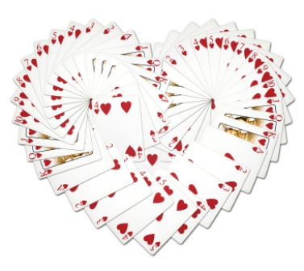

Как научиться делать
фокусы
Ловкость рук и никакого мошенничества, тщательная подготовка и тренировки позволяют делать красивые и впечатляющие фокусы. Иллюзионисты показывают невероятные вещи – живые существа, вещи и предметы могут появляются из ниоткуда и исчезать в никуда, эффект неожиданности срабатывает мгновенно, а люди тут-же впечатляются.
Начинайте обучение с простых фокусов для тренировки техники и памяти. Проделывайте фокусы перед зеркалом и своими знакомыми. Голая техника будет мешать хорошим фокусам, разнообразьте свое представление спецэффектами, заклинаниями, различными движениями или хотя бы маханием рук, которые в глазах зрителей превратятся в магию.
Самый простой и эффективный фокус - с картами, который вы запомните на всю жизнь: 
- Возьмите колоду карт со стола открытой стороной к себе (лицом к себе) и запомните нижнюю карту. Держите колоду правой рукой, начиная передвигать карты большим пальцем назад друг за другом, начиная с верхней. Предложите зрителям остановить Вас тогда, когда они выберут карту. В этот момент левая рука держит колоду снизу и незаметно сдвигает ту самую карту назад. После того как выбор карты сделан, вы снимаете их с колоды вместе с той самой картой, которая оказывается внизу выбранных карт. Та самая карта, которая соединена со снятой колодой, будет в глазах зрителей картой которую они выбрали. Далее покажите снятые карты лицом к зрителям, а к себе рубашкой, чтобы зрителя поняли, что вы не знаете какую карту они видят. После этого вы можете легко назвать «выбранную» карту.
- Также вы можете усложнить этот фокус тем, что попросите зрителей вначале запомнить показанную им карту. Затем, можете начать тасовать колоду сколько угодно, но так как Вы знаете карту, Вам не составит огромного труда найти её в колоде. Данный способ очень популярен и хорошо известен, поэтому рекомендуется его показывать при небольшом количестве зрителей.
Совет - Показывайте только хорошо выученный вами фокус. Лучше показать простой, чем более сложный, но плохо подготовленный. И самое главное никогда не раскрывайте секрет фокуса, иначе он потеряет свою магию.
Простой фокус с монеткой.
Фокусник просит у зрителей монетку. Подойдет любая, но лучше, если это будет маленькая монетка. Получает ее и кладет на свою ладонь.
Затем сообщает зрителям что сейчас он вотрет ее в свою руку и она исчезнет. Второй ладонью начинаете как бы втирать монетку, но на самом деле вы стараетесь передвинуть монетку на тыльную сторону ладони между большим и указательным пальцем. Желательно чтобы при этом руки были влажные.
Когда монетка прилипла к тыльной стороне руки, покажите зрителям ладони.. и о чудо, монетки нет.
Даже если монетка упадет или зрители увидят что она с тыльной стороны, вы всегда можете сказать, что перестарались и протерли ее насквозь.